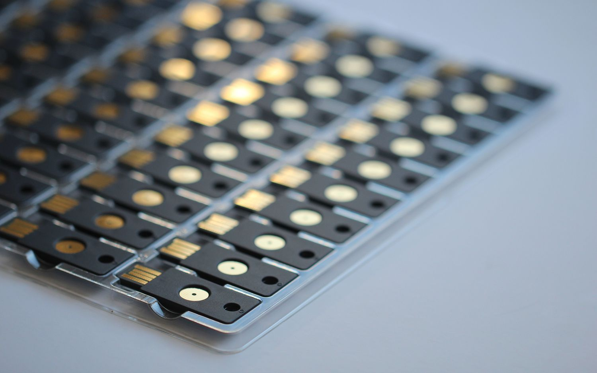

YubiKey and Mac OS X FileVault
If there’s one thing I seem to be obsessed with lately and that’s security. I’ve never had any of my accounts hacked but that doesn’t stop me. It happens all the time though and working in IT I should know how to prevent it. If you haven’t heard about YubiKey and you want to prevent getting your accounts hacked then you should check it out, it’s basically a USB key that anything you plug it into will see as a keyboard, if the application you’re authenticating against supports it then it can generate one-time passwords for you so even keyloggers can’t catch you out. It works with the likes of Gmail & Dropbox’s two-factor authentication, more and more services are starting to add it as a security feature.
Yubikey
YubiKey allows you to use one of it’s memory banks for a 32 character static password for services and devices that don’t support two factor authentication, such as Mac OS X FileVault. When you enable FileVault it requires you to enter your password pre-boot so that it can decrypt your stuff, similar to TrueCrypt and Bitlocker for Windows. So I setup a 32 character randomly generated password on my YubiKey and then set this as my OS X login password. I rebooted and here’s where the issue occurs, I press the button on my YubiKey to enter the password and OS X tells me wrong password.
Apparently there is a bug in the EFI firmware that doesn’t like with the speed at which the YubiKey enters the password and causes it to drop a few characters.
There is a workaround for this.
Using the YubiKey Personalization Tool that you programmed your YubiKey with you can set Output Character Rate, this is the speed in which the YubiKey types the characters. There are three increments in speed, I found that 40ms works great, 20ms suffered from the same issue however
So there it is, if you’re using you’ve programmed your YubiKey with a static password and you’re having problems authenticating at boot after enabling OS X FileVault then set your Output Character Rate to 40ms delay. Vuala!